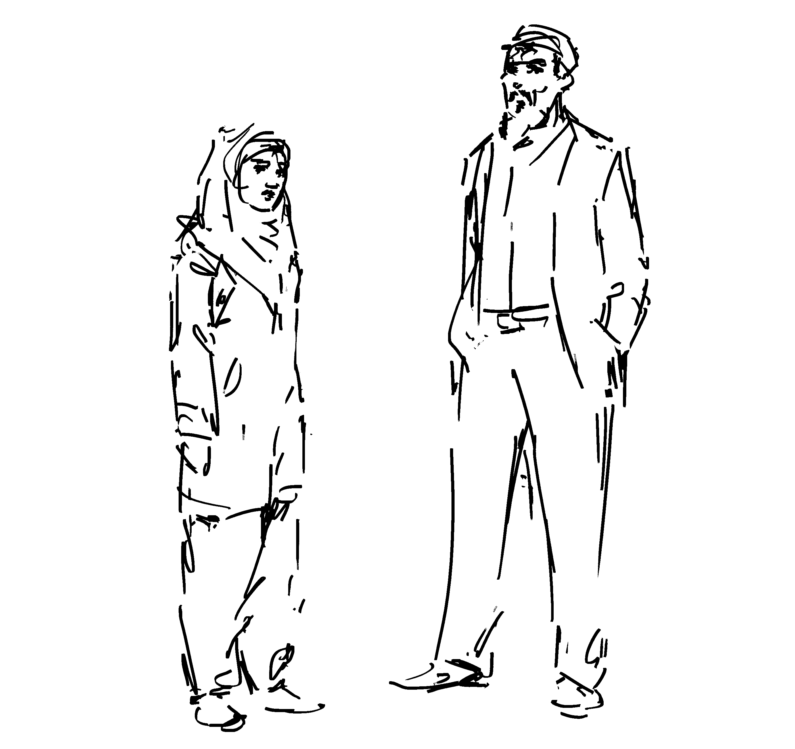
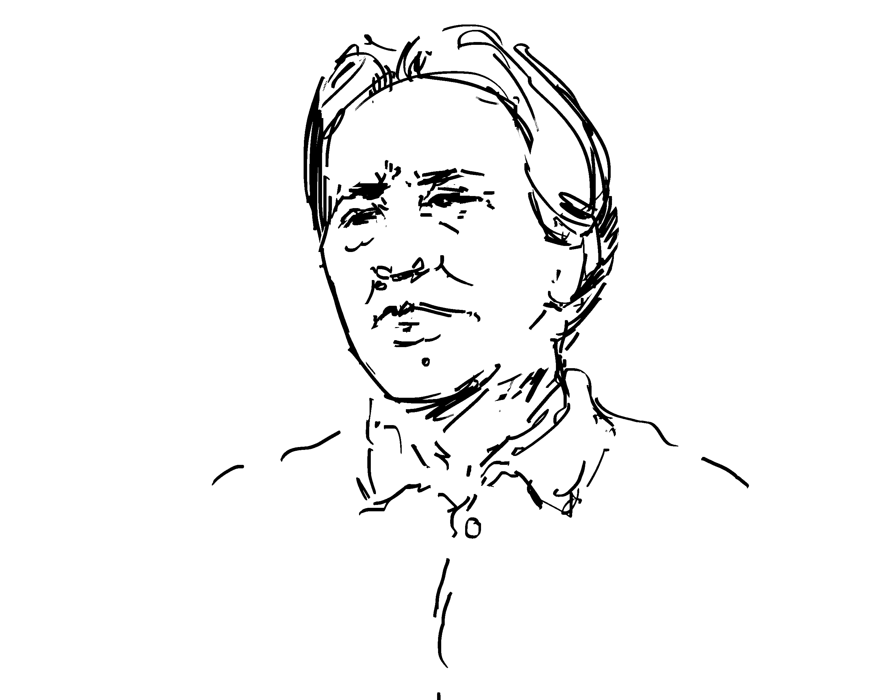
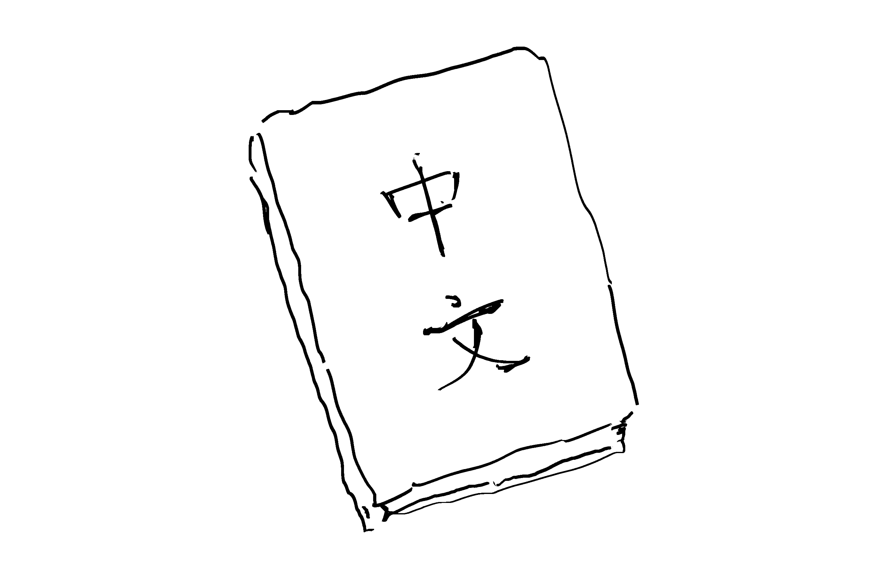

Uyghur people
Han Chinese form the overwhelming majority of the Chinese population at over 90%, while 8-9% is composed of ethnic minorities. [1][2]
The Uyghur ethnic group is one of the largest minority ethnic groups in China, almost entirely residing within the "the Xinjiang Uyghur Autonomous Region (XUAR) in China's northwest – occupying one-sixth of the country's total land mass and holding one of the nation's largest and most strategically important natural gas and oil reserves..." [1]
The dissent of Muslim Uyghurs is viewed by the Chinese government as dangerous and an element that could compromise the stability of the resource-rich location. Because of this, there is high incentive for China to reinforce its control over the region.
This power dynamic poses for the Muslim Uyghurs in Xinjiang two major issues which are closely tied to one another.

Mao Zedong, founding father of the People's Republic of China and a highly controversial revolutionaryEconomic
There has been a significant increase of Han population in Xinjiang since the establishment of the People's Republic of China, mostly due to the number of Han migrants, first as a result of the government's effort to "rusticate" the youth and subsequently due to the famine caused by Mao's Great Leap Forward. Between 1953 and 2000, the Han population in Xinjiang increased from 6.1% to 40.6% of the region's total. [1]
The influx of Han migrants over the past few decades has brought significant economic growth and urbanization to Xinjiang. However, the benefits of this progress is largely limited to the Han population. Uyghurs in Xinjiang face discrimination in work force as many Han Chinese are unwilling to hire Uyghurs. Discontent among Uyghurs has grown as their economic opportunities remain stagnant even as those of the Han continue to increase. From 1991 to 2000, the population of Han Chinese in Xinjiang's urban areas as a percentage of the total urban population in Xinjiang increased by about 2%, whereas that of the Uyghurs decreased by about 1.9%.
The lower economic performance of the Uyghurs further cements their negative stereotypes and keeps them firmly rooted below the Han Chinese on the social ladder.
"Estimates put Xinjiang's coal reserves at about 38 percent of the national total, while it already produces 13 of China's crude oil output and 30 percent of the country's natural gas. But despite the vast mineral wealth and billions of dollars of investment, analysts say much of the proceeds have flowed to Han Chinese...." [4]

Many of Xinjiang's education policies target the Uyghur youth, limiting their exposure to the values of their cultural heritage.Cultural
In order to bring the Uyghur people into the fold, the Chinese government has put in policies designed to enforce Han culture upon the Uyghur population. Government-sponsored boarding schools have been established across Xinjiang to educate the Uyghur youth on Han values.
Even though the government recognizes Islam as an official religion, it has been limiting much of the Islamic practices of the Muslim Uyghurs in Xinjiang. "For example, public sector employees are not allowed to wear Islamic head scarves or coverings (including the doppa cap for males), nor fast during Ramadan. Individuals under the age of 18 are not allowed to enter religious places such as mosques or pray in schools. The study of the Koran is only allowed in designated government schools, and Imams cannot teach the Koran in private. There are documented accounts by Muslim Uyghurs who report that government informers regularly attend their prayer services in local mosques, especially the Friday sermon." [1]
With the ever-increasing Chinese government interference in the region, many Uyghurs fear the loss of their cultural identity. The government's suppression of Uyghur traditions in favor of Han culture has contributed to the mounting resentment among the Uyghur population toward the Han Chinese.
These issues have fueled the rise of an "ethnoreligious consciousness" [1] among Muslim Uyghurs, binding them together over their ever growing awareness of the loss of their cultural identity and social position.
"Many Uighurs feel like second-class citizens in Xinjiang, culturally, socially and economically discriminated against by the now dominant Han." [5]